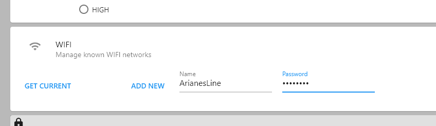
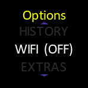
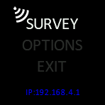
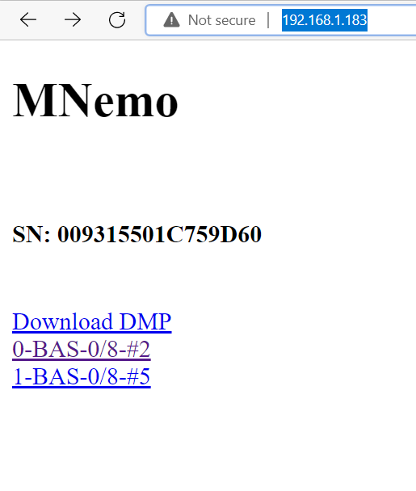
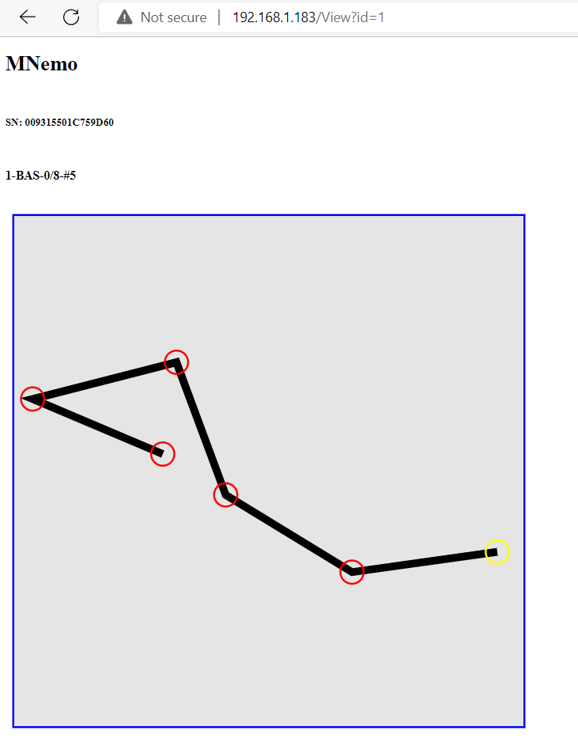
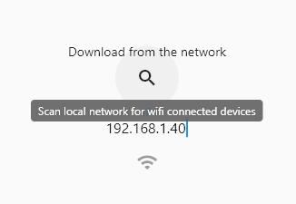

Connect your Mnemo to your computer and open MNemoLink.
In the Settings Tab you can manage the known wireless networks.
Click Get Current to get the list of the current networks. ( This list is empty when you buy the device)
Enter the name and the password of your network
Press Add New and the network will appear in the list

On your Mnemo navigate to OPTIONS > WIFI (OFF)

The Mnemo will than try to connect to the known networks.
If successful it will come back to main menu and display the IP address of the device.

You can now navigate in your favorite internet browser to the displayed IP address and click on the Download DMP link or preview the surveys

The Mnemo as Wireless Access Point
If your local network is not accessible you can also configure the MNemo as a Wireless Access Point. Navigate to OPTIONS > EXTRAS > WIFI AP(OFF) and select the entry.
You can than connect your computer (or phone) to the wireless network created ( SSID: Mnemo Passord: password) and navigate to the displayed IP address as you would do on your local network.
Network Scan and data download with MNemoLink
You can use MNemoLink to scan your Network and find your MNemo.

Once it is found you can download the data through the wifi.